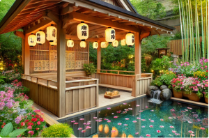
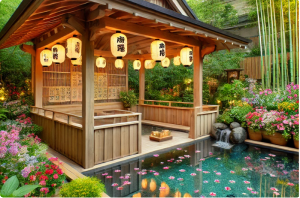

沉浸溫泉的靜謐，感受新北投的魅力
特徵： 水質透明微帶淡藍色，硫磺味較淡，溫度通常高於白磺泉，約 45°C 至 75°C。
功效： 富含放射性元素（如氡），據說能幫助舒緩肌肉與關節不適，深受遊客喜愛。
特徵： 呈淡黃色或微紅色，水中富含鐵質與硫磺成分，水溫一般在 40°C 至 60°C。
功效： 據說對風濕與疲勞恢復有益，同時有助於促進新陳代謝。
特徵： 水質呈乳白色，帶有硫磺味，溫度約在 45°C 至 58°C。
功效： 據說對皮膚有護理效果，可促進血液循環，幫助放鬆身心。
北投文物館附設的湯屋以白磺泉為特色，結合傳統日式建築與濃厚的歷史氛圍，是享受白磺泉的理想地點。
大天酒店提供優質的青磺泉泡湯體驗，設有高端私人湯池，環境幽靜，適合尋求高品質溫泉享受的旅客。
這裡以鐵硫泉聞名，提供露天池與個人湯屋，還有中藥加溫泉的特色療法，是感受鐵硫泉特性的好地方。
青石湯屋以古早石材打造，結合日式庭院景觀，提供寧靜舒適的私人空間，感受百年地熱文化的溫暖。
位於山腰的雲霧湯池，溫泉水散發天然硫磺香，蒸氣如雲霧，晨曦日出間洗滌心靈的疲憊。
和風泉庭以傳統日式建築融入現代溫泉技術，四季皆美，親子共享，呈現純粹的療癒時光與自然之美。
 
